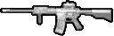
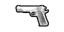

/// PERFIL DO OPERADOR
O Capitão John Price (indicativo militar "Bravo Seis") é um oficial de alta patente do 22º Regimento do Serviço Aéreo Especial britânico (SAS) e um dos comandantes da unidade multinacional de operações especiais Força-Tarefa 141. Reconhecido por sua excelência tática, liderança irretocável e pragmatismo em combate, Price é um veterano condecorado que desempenhou um papel central na resolução de graves crises de segurança internacional.
/// MODERN WARFARE
"There's a simplicity to war. Attacking is the only secret. Dare, and the world yields. How quickly they forget that all it takes to change the course of history – is the will of a single man." — Price, no inicio da missão "Dust to Dust".
" Eu era apenas um tenente naquela época... fazendo um trabalho sujo. Chernobyl . Um Natal para os bandidos. Mesmo uma década depois, muitos deles ainda usavam isso para colocar as mãos em material nuclear... muitos deles, incluindo um tal de Imran Zakhaev . Claro que não podíamos simplesmente deixar isso acontecer. Dinheiro por barras de combustível nuclear usado? Essa é uma receita infernal para a destruição. Foi a primeira vez que nosso governo autorizou uma ordem de assassinato desde a Segunda Guerra Mundial . Eu estava sob o comando do Capitão MacMillan . " — Price contando a história da tentativa de assassinato de Zakhaev.
Em 1996, 15 anos antes dos eventos de Call of Duty 4: Modern Warfare , Price detinha a patente de Tenente e servia como atirador de elite no 22º Regimento SAS, sob o comando do Capitão MacMillan . Os dois foram enviados para Pripyat , na Ucrânia, em uma operação secreta para assassinar o traficante de armas Imran Zakhaev (e, em Modern Warfare Remastered, Vladimir Makarov, já que o carro em que ele estava foi colocado ao alcance de tiro ; o jogo trata Yuri, no banco de trás do mesmo carro, como aliado). Embora Price inicialmente acreditasse ter matado Zakhaev com um rifle de precisão calibre .50, Zakhaev sobreviveu, apesar de ter perdido o braço esquerdo. A dupla foi então cercada pelas forças de Zakhaev e, no tiroteio que se seguiu, MacMillan foi ferido por um helicóptero Mi-28 que caiu . Price carregou MacMillan até o ponto de extração, onde foram resgatados após resistirem bravamente contra os ultranacionalistas.
Nos eventos de Call of Duty 4: Modern Warfare e Call of Duty: Modern Warfare Remastered , Price detinha a patente de Capitão e liderava um esquadrão do SAS, designado "Equipe Bravo", desde o Estreito de Bering até a Rússia , depois para o Azerbaijão e, finalmente, de volta à Rússia . Sob seu comando, ao longo dos eventos, estavam Gaz e, posteriormente, o Sargento John "Soap" MacTavish, bem como outros como Mac , o Sargento Arem , o Sargento Barton , o Sargento Wallcroft e, por fim, o Soldado Griffen.
/// MODERN WARFARE 2
/// RESISTRO DE MISSÕES
OP. CHARIOT (PRIPYAT)
Tentativa de neutralização de Imran Zakhaev. Extração sob fogo pesado.
OP. KINGFISH
Assalto à fortaleza ultranacionalista. Price capturado para garantir a fuga da equipe.
SITE HOTEL BRAVO
Eliminação do General Shepherd no Afeganistão.
/// EQUIPAMENTO DE PREFERENCIA

